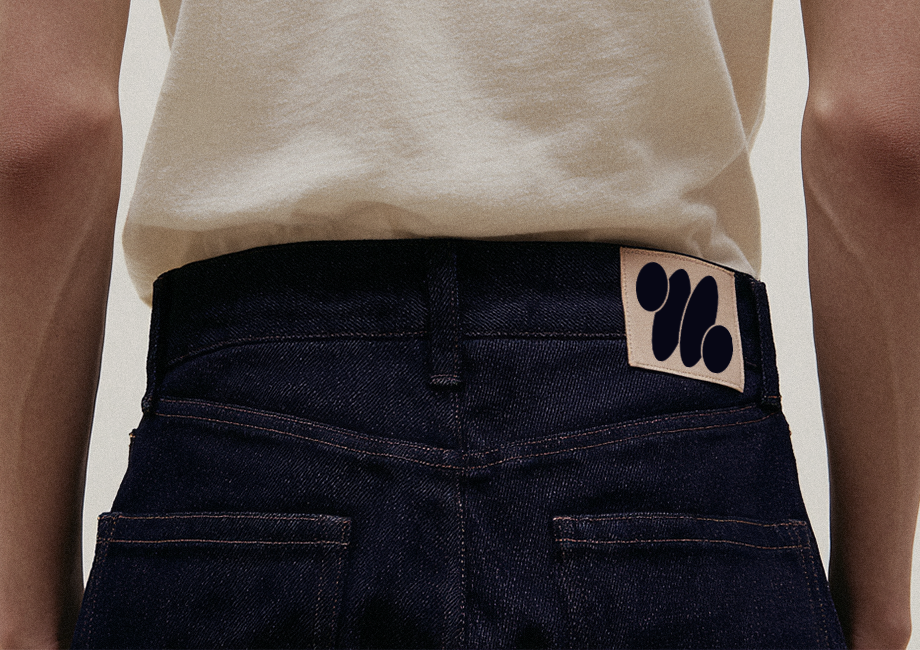
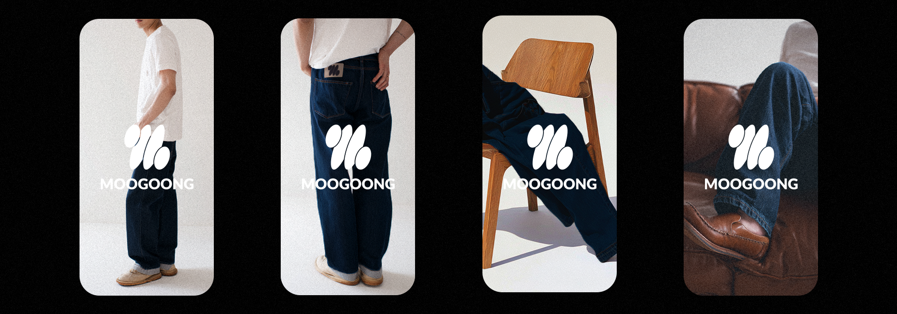
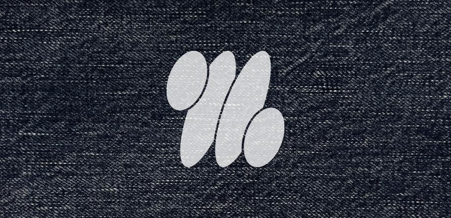
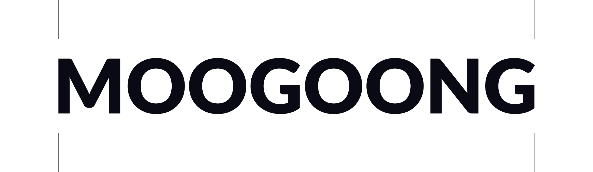
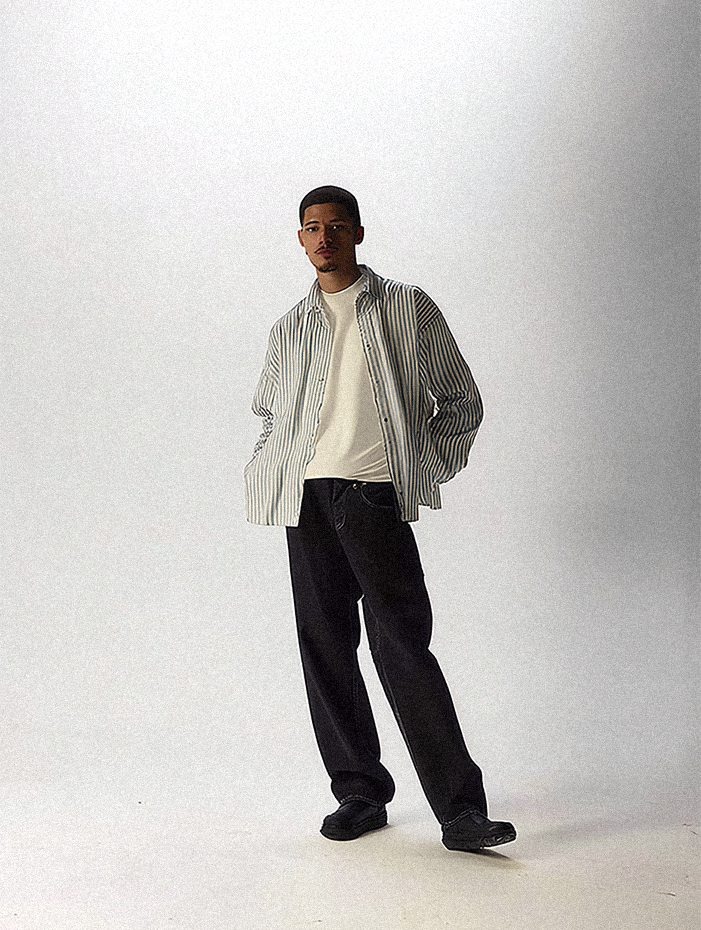
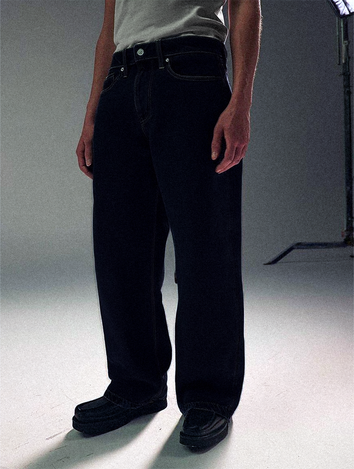
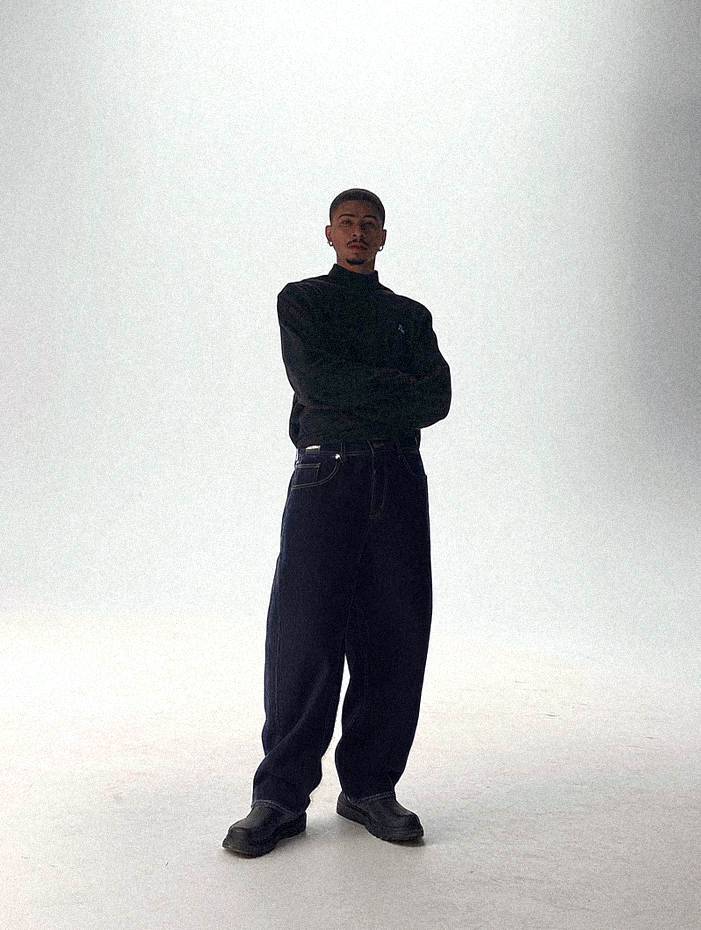
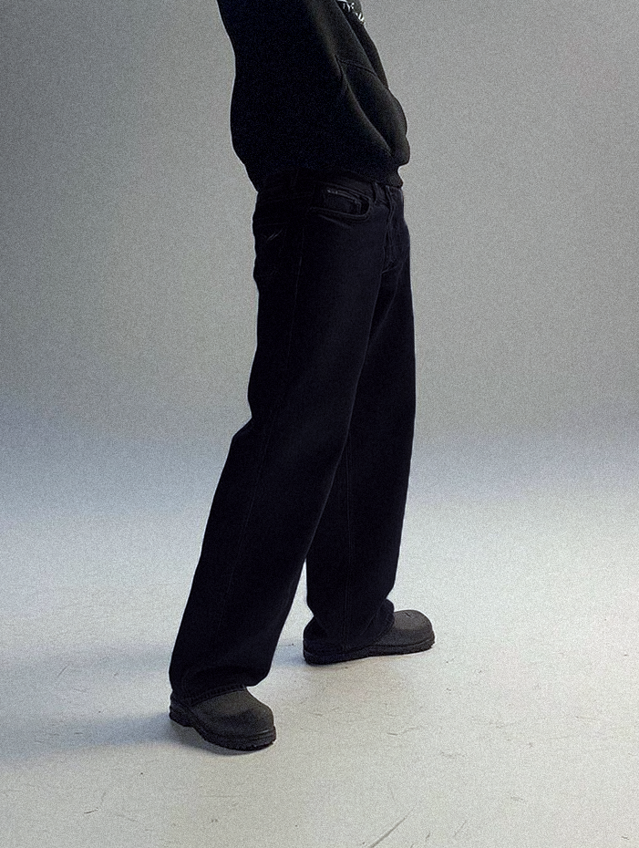

FICTIONAL BRAND DESIGN - Moogoong, Denim Brand
The brand concept is aimed at modern consumers seeking high-quality, timeless denim—bridging tradition with a fresh, minimalist aesthetic.
It reinterprets the heritage of selvage denim through a contemporary lens, allowing wearers to enjoy the naturally fading beauty of raw denim over time.

The name MOOGOONG is derived from the Korean word “Mugungmujin (무궁무진)”, meaning "infinite possibilities."
Inspired by the timeless nature of selvage denim, the brand highlights how denim adapts uniquely to the wearer.
MOOGOONG presents relaxed silhouettes that modern consumers can easily adopt into their wardrobe.

The primary target audience is style-conscious individuals aged 25–35 who value subtlety and individuality.
They seek garments with lasting value over trend-driven fast fashion.

The symbol consists of four abstract ovals, inspired by loose or fraying yarn from denim weaving—specifically the weft thread structure.
It visually represents the texture and history embedded in traditional denim.

The logotype uses a heavy, linear sans-serif typeface to emphasize modernity and longevity.
Its contrast with the curved symbol brings tension and a contemporary identity to the brand.




Using Midjourney, an AI image generation tool, we produced a virtual lookbook that aligns with the brand tone.
The styling uses raw denim basics paired with subdued, modern pieces—encouraging wearers to create their own fading story over time.
Rather than projecting fashion, the brand invites the user to grow their own expression through everyday wear.
05.2025 - 05.2025
Tool : Photoshop, Illustrator, Midjourney